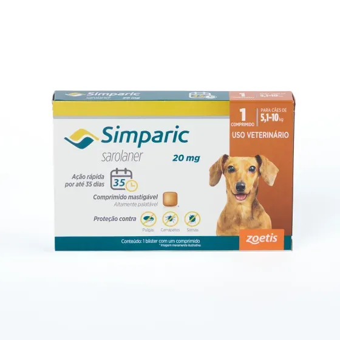

Antipulgas Simparic 20mg para Caes 5 a 10kg
Ver descrição do produto
Simparic é um antipulgas desenvolvido para cães, oferecendo proteção rápida e eficaz contra pulgas e carrapatos, contribuindo para a saúde e o bem-estar do animal.
- Indicação: cães de 5 a 10 kg
- Categoria: antipulgas
- Animal: cães
- Proteção: contra pulgas e carrapatos
- Apresentação: comprimido mastigável